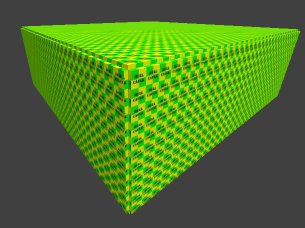

|
ET Mapping Tutorial
Lesson 4
|
|
|
|
|
By managing to achieve a fully workable,
albeit tiny, map in the previous lesson, you
have actually got over a significant
hurdle. Much of what follows will be
easy to assimilate now that you have acquired
the knowledge to get the guts of a map
working.
Our first room was tiny. We will
expand it to something rather larger,
convert it into an "outside"
environment to contain some buildings, and
then make a building to put in it. At
the end of this second tutorial you'll be
able to run around inside and outside a
building that contains a few rooms.
|
|
Run Radiant if you haven't already.
Open the tutorial.map.
 You may have spotted on the
Preferences tabs that you can get
Radiant to open the last map you were
working on. Don't do it. You
can mangle your map so that it causes
Radiant to crash on opening it, and if
it's set to open it on startup it can
get confusing and tiresome trying to
sort it out. You may have spotted on the
Preferences tabs that you can get
Radiant to open the last map you were
working on. Don't do it. You
can mangle your map so that it causes
Radiant to crash on opening it, and if
it's set to open it on startup it can
get confusing and tiresome trying to
sort it out.
|
|
|
You will notice that the textures window shows
by default all the textures used in your
map. As you get more and more textures
in your map, that list will get longer.
This brings a useful editor feature into use:
Click Textures/Textures Window Scale and
select 25%. That way you can see more
textures more easily. There will be
times though that you can't easily read the
texture names because the text is overlapped
with the next texture. Set the scale to
100% or 200% to overcome that. In other
words, set the scale to whatever you are
comfortable with and that meets your needs.
Let's make this tiny room into a large
outdoor container for a building we will
then create inside it.
|
It might be quicker to start afresh with
making a large cubic space - but we will
instead transform our tiny room into the
large volume because it demonstrates a
number of handy techniques, including
hiding, revealing and deleting brushes,
plus manipulating multiple brushes
simultaneously.
|
In the 2D window, top down view,
shift+alt+click on the ceiling of your room,
twice. This will end up selecting the
floor (yes!) as you will easily verify by
either pressing ctrl+tab or looking in the
3D view.
Still in the overhead 2D view, shift+click
on the ceiling area again. This will
add the ceiling to your selection set, ie
you now have the ceiling and floor selected.
Press 8 to get a nice big grid scale.
In the 2D view, click outside the selected
area in the upper part of the window, and
drag the selection larger in that direction,
until the selection reaches the 1024 Y-axis
mark.
|
|
Now click in the 2D window to the right of the
selection and drag it to the right, making the
selection a square of dimension 1024*1024.
|
|
Deselect the brushes. Now we want to
stretch the walls to match. Put the
cursor over the right hand wall in the 2D
window and press shift+alt+click twice.
The first click will select the ceiling, but
the second will select the wall that we want.
Then shift+click the left hand wall, so now
we have both side walls selected. Put
the cursor above and between them and drag
upwards until they are 1024 long.
|
|
Press ESC. We want to move that right
hand wall over to the far right, but the
ceiling is in the way and the shift+alt+click
is a little tiresome, so we'll employ another
technique to make it easier.
Select the ceiling. Press H to
hide the selection. Now we can
get at the walls without always having to
drill down through the ceiling.
Select the right hand wall. Put the
cursor within it in the 2D window and move
it over to the far right.
Press ESC - select the remaining 2 short
walls and
delete them by pressing BACKSPACE. (If you accidentally select say the
floor when trying to select a wall, just
repeat the click and the wrongly selected
brush will get deselected again.)
Now select the 2 big walls - the quickest
way here is probably to click on them
directly in the 3D window.
Duplicate them by pressing the Space Bar,
then rotate them through 90 degrees by
pressing the key shown in the picture:

Put your cursor within one of the selected
brushes in the 2D window, and drag the walls
into place to complete the square around the
floor.
Press ESC to deselect and finally press
shift+H to reveal all hidden brushes
(ie the ceiling).
|
|
Ok we have a wide area now, but the sky is
pressing down a bit, so we need to give
ourselves some more headroom.
Select the ceiling brush. Press
ctrl+tab to get a side view in the 2D
window. Move the ceiling up a couple
of grid lines.
Press ESC. Select all 4 walls (easiest
by shift+clicking them in the 3D window).
Return to the 2D window and put the cursor
above the walls, then drag them up to meet
the ceiling.
Press ESC. We've now made ourselves a
larger volume, and we're going to make it
represent the outdoors.
|
|
Now is as good a time as any to set the new
worldspawn values. Select any normal
brush and press N.
Click on the "mapcoordsmaxs" line
in the table, and then replace "128
0" in the Value box with "1024
0". Press return.
Click on the "mapcoordsmins" line
in the table, and then replace "0
128" in the Value box with "0
1024". Press return. Press
ESC.
|
|
|
|
|
This next bit is not strictly necessary, but
it will aid you when your map grows larger and
more complicated. Because you will have
a lot of caulked brushes in your 3D view, it
can be confusing trying to spot what are
supposed to be the outer boxes that contain
everything. There is another purpose
which I will cover later on.
So we will apply another texture to the
walls of our resized box, to reflect its
role as the container of the play
environment within it. It will also
demonstrate one of the most usual ways to
select multiple brushes.
In the 2D view, make sure you have the top
down view, and create a brush that envelopes
the entire cubic creation made so far.
Don't worry about what texture it is nor how
high the brush happens to be (as seen in the
3D window).
Somewhere in the 2D window, doesn't matter
where, right click. Choose
Select/Select Complete Tall. This will
select all brushes that are completely
within the 2D box you've just drawn, even if
they happen to extend beyond it,
upwards/downwards, in the 3D view. It
also deletes the brush we had created
because it was created to define the set of
brushes we wanted to select.
Now we want to make the Hull Caulk
texture available to us for picking.
So click the Textures menu item, then
Common. You'll see lots of chequered
multi-coloured squares in your textures
window. You might want to set the
texture scale to 50% or 100% to make it
clearer (Textures/Texture Window
Scale). You might also want to resize
the textures window for a minute to help you
see what you've got.
Find the Yellow/Green box labelled Hull
Caulk and click it. Then press ESC and
your box will now look like this:

|
|
|
|
|
In the 3D view, go inside the box - we need to
restore the interior textures.
Shift+ctrl+click the ceiling. Click
Textures/skies/skies_sd (note you want the
skies that has a subordinate skies_sd
menu) and click the sd_siwasky texture in
the textures window. The ceiling will
now have red/black check - don't worry about
it.
Shift+ctrl+click the floor. Click
Textures/fueldump and click the snowfloor
texture (don't worry about the Hong Phong
text).
Shift+ctrl+click a wall. Right-click
so you can rotate the view in the 3D window,
and shift+alt+ctrl+click the other 3
walls. Then right-click to get your
arrow cursor back.
Click Textures/battery_wall and click
wall03_mid texture. Press ESC to
deselect the faces.
Save your work and compile the map.
|
|
Run ET to check how your work is looking so
far - with luck it looks like this:
Run around a bit. Notice that you are
making snowy footstep sounds? That's
pretty neat, how does the program know that
a messy white/grey texture painted on the
ground should sound like snow? The
answer is "shaders", which we'll
cover later on.
|
|
Next lesson
|
|
|
|
|